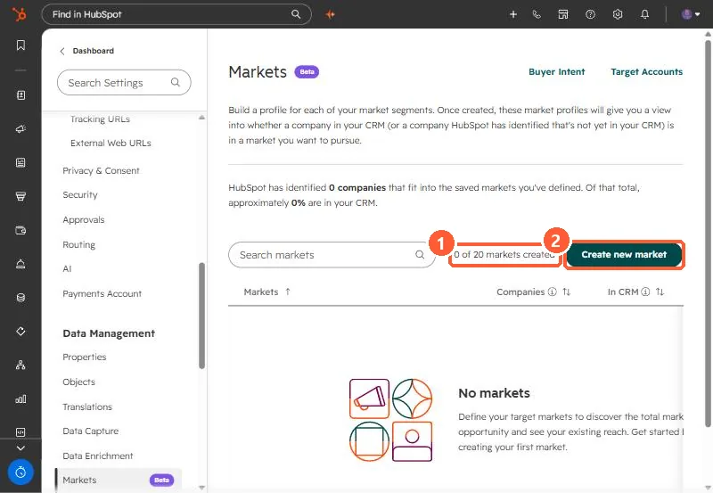

Short answer
Markets, under Settings > Data Management > Markets (beta in my demo portal), save a definition of the companies you want to pursue, using industry, location, employee count and similar categories, with exclusions. HubSpot then shows how many companies fit and how many are already in your CRM. Each user can have up to 20 markets, and markets used in Buyer Intent saved views are protected from deletion.
1. The page
Markets links straight to Buyer Intent and Target Accounts from the top of the page.


2. Define a market
- Name it, then add categories such as industries and company location.
- Add exclusions per category to remove what you do not want.
- Edit later from the list. Once you hit 20, delete one to add another.
3. Where it is used
Buyer Intent uses markets to segment high-fit companies visiting your high-intent pages, and the target accounts page can recommend companies within a market. See hiring and intent signals for how we combine our own signals with HubSpot's.